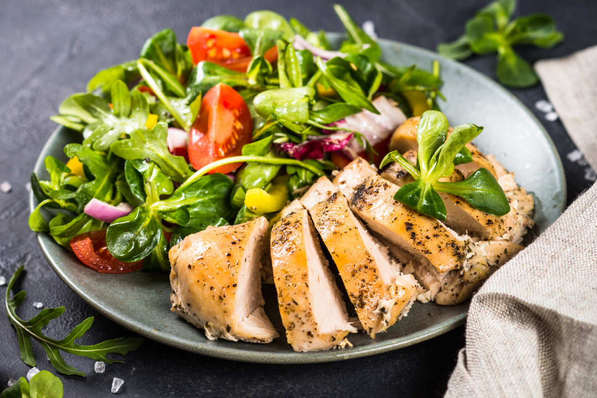

Chicken Salad

Ingredients
- 2 cups cooked chicken, shredded or diced
- 1/2 cup mayonnaise
- 1/4 cup celery, finely chopped
- 1/4 cup red onion, finely diced
- 1 tablespoon fresh lemon juice
- 1 teaspoon Dijon mustard
- 1/4 teaspoon salt
- 1/4 teaspoon black pepper
- 2 tablespoons fresh parsley, chopped (optional)
- 1/4 cup grapes, halved (optional)
- 1/4 cup walnuts or almonds, chopped (optional)
Steps
In a large mixing bowl, combine the mayonnaise, lemon juice, Dijon mustard, salt, and pepper. Whisk together until smooth.
Add the shredded or diced chicken to the bowl and gently toss to coat with the dressing.
Fold in the chopped celery and diced red onion until evenly distributed.
If using, add the halved grapes, chopped nuts, and fresh parsley. Mix gently to combine.
Taste and adjust seasoning with more salt, pepper, or lemon juice as needed.
Cover and refrigerate for at least 30 minutes to allow flavors to meld.
Serve chilled on bread for sandwiches, over lettuce for a salad, or with crackers.